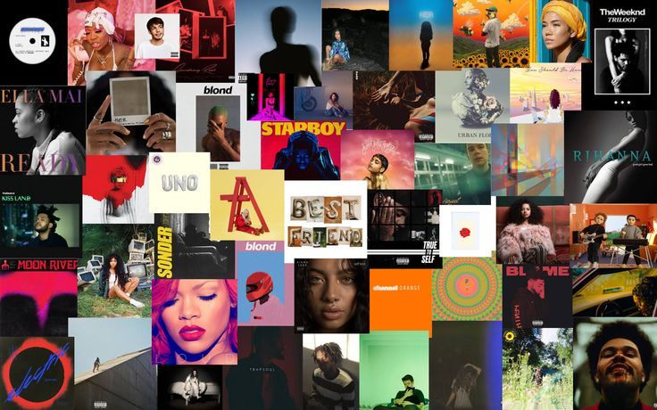

Une actualité propre à votre univers
Publié le .
Développez ici une information réellement utile.
Le R&B est un genre musical d'origine américaine qui mêle la soul, la funk et des rythmiques urbaines pour mettre en valeur les émotions à travers des harmonies vocales soignées. Cette culture musicale a été marquée par la puissance vocale inégalée de Whitney Houston, les performances scéniques et les tubes de danse d'Usher, ainsi que la polyvalence et la longévité de Chris Brown. Aujourd'hui, le genre continue de se renouveler grâce à l'écriture poétique et expérimentale de Frank Ocean ainsi qu'au style « Trapsoul » unique de Bryson Tiller.

Publié le .
Développez ici une information réellement utile.